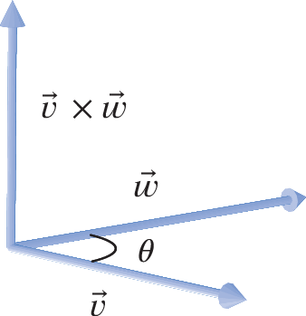
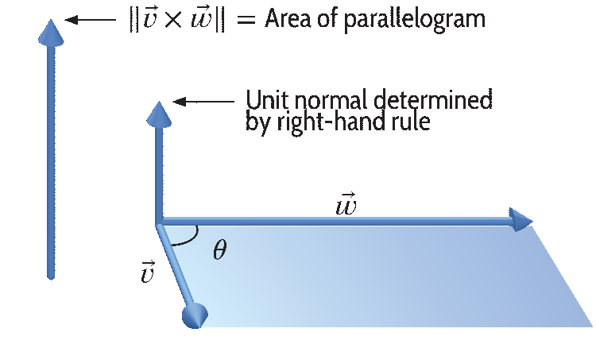
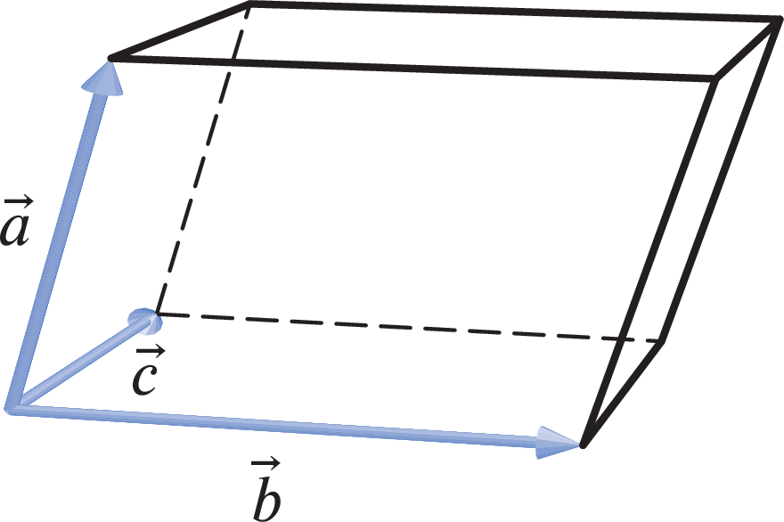

Section 3 Key Concepts
The Definition of the Cross Product.
-
Visual Definition: The cross-product \(\vec{v} \times \vec{w}\) of vectors \(\vec{v}\) and \(\vec{w}\) is \(\vec{0}\) if they are parallel or one of them is \(\vec{0}\text{.}\) In general, it is defined to be the vector satisfying the following two properties:
- \(\vec{v} \times \vec{w}\) is orthogonal to both \(\vec{v}\) and \(\vec{w}\text{.}\)
- \(\vec{v} \times \vec{w}\) points in the direction determined by the right hand rule: point your index finger in the direction of \(\vec{v}\text{,}\) your middle finger in the direction of \(\vec{w}\text{,}\) then \(\vec{v} \times \vec{w}\) points in the direction of your thumb when extended perpendicular to your fingers.
- The magnitude of \(\vec{v} \times \vec{w}\) is the area of the parallelogram formed by \(\vec{v}\) and \(\vec{w}\text{.}\)
 -
Geometric Definition: For vectors \(\vec{v}\) and \(\vec{w}\) in \({\mathbb R}^3\text{,}\) we define\begin{equation*} \vec{v} \times \vec{w} =(||\vec{v}|| ||\vec{w}|| \sin (\theta )) \vec{n} \end{equation*}where \(\vec{n}\) is the unit vector pointing in the direction of the vector determined by the right hand rule.
-
Algebraic Definition: For \(\vec{v} =v_1\vec{i} +v_2\vec{j} +v_3\vec{k}\) and \(\vec{w}=w_1\vec{i} +w_2\vec{j} +w_3\vec{k}\text{,}\) we define\begin{equation*} \vec{v} \times \vec{w} = (v_2 w_3-v_3w_2)\vec{i} +(v_3w_1-v_1w_3) \vec{j} +(v_1w_2-v_2w_1) \vec{k}. \end{equation*}To avoid memorizing a long formula, you can simply remember that the cross product is the determinant of the matrix \(\left[ \begin{array}{ccc} \vec{i} \amp \vec{j} \amp\vec{k} \\ v_1 \amp v_2 \amp v_3 \\ w_1 \amp w_2 \amp w_3 \end{array} \right].\)
Properties of the Cross Product.
If \(\vec{v}\text{,}\) \(\vec{w}\text{,}\) and \(\vec{u}\) are vectors and \(c\) is a scalar, then:- \(\vec{w} \times \vec{v} =-\vec{v} \times \vec{w}\)
- \((c\vec{v}) \times \vec{w} =c(\vec{v} \times \vec{w}) =\vec{v} \times (c\vec{w})\)
- \(\vec{u} \times (\vec{v} +\vec{w}) =\vec{u} \times \vec{v} +\vec{u} \times \vec{w}\)
- (Test for parallel) Two non-zero vectors \(\vec{v}\) and \(\vec{w}\) are parallel if and only if \(\vec{v} \times \vec{w}=\vec{0}\text{.}\)
Applications of the Dot Product.
- To find a normal vector to a plane, cross two non-parallel vectors within that plane.
-
The volume of the parallelepiped determined by \(\vec{a}\text{,}\) \(\vec{b}\text{,}\) and \(\vec{c}\) is \(||\vec{a} \cdot (\vec{b} \times \vec{c} )||\text{.}\)
